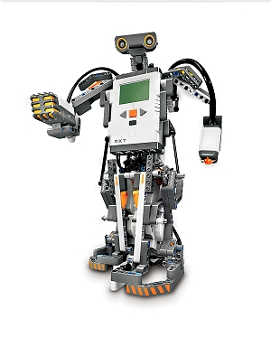

Lego Mindstorms NXT Robot Intro

What is the Lego NXT robot?
from Wikipedia:
Lego Mindstorms NXT is a programmable robotics kit released by Lego in July 2006. Its main component is the brick shaped computer, which can
take input from up to four sensors and control up to three motors. The brick has a 100x64 pixel monochrome LCD display and four buttons that can be used to navigate a user interface using hierarchical menus.
It also has a speaker and can play sound files. Its power comes from 6 AA batteries therfore please keep the brick turned off when you are not running programs on it.
Goals for This Lab
- Learn how to write a simple program in NotExactlyC(NXC), which is the language used by lego robots
- Learn how to interact with actual hardware from a computer program
- Download the program on the brick and run it
Your bricks are made up of:
- One central unit with an lcd display, buttons, 7 sensor ports and one USB port
- Two wheels, one connected to port A and the second to port C
- One motor with no tire
- One touch sensor
Files you will need for this lab
Make sure you download all of them and set the appropriate permission before you continue with the lab:
To set the right executable permission run:
chmod +x NexTTool t2n nbc
Writing your first program in NXC
Open up the file lab1.nxc. Inside you will see some sample code which moves the robot forward.
Your task is to add to that code in order to bring the robot back to the position you started.
(Note: your code has to spin the robot first so that it faces you and then comes back, you can't just have it spin its wheels in reverse)
To do this you can use the following functions:
- OnFwd(Wheel Identifier, Power(Hz)) - Makes the wheel spin forwards with the given power. Typically the power ranges between 0 and 75
- OnRev(Wheel Identifier, Power(Hz)) - Makes the wheel spin backwards with the given power.
- Off(Wheel Identifier) - Makes the wheel stop spinning.
- Wait(Time in milliseconds) - Makes the program wait for the given time. You can use this between the On and Off statements to have the wheels move for a given period of time
- The wheel identifiers are:
- OUT_A - to make the right wheel spin
- OUT_C - to make the left wheel spin
- OUT_AC - to make both wheels spin at the same time
Instruction for compiling and running your program
- Tell eniac that you want to connect your brick to the lab machine
After logging into the computer open up a terminal and type: usb-perms
Hit Enter to run the command.
- Plug in the usb cord from the brick and turn it on by pressing the orange button
Note: Make sure you plug it into your computer and not your neighbor's
- Lookup your brick
./NeXTTool -listbricks > nxt.dat
Note: run "cat nxt.dat" and look at the output. If it is missing or it has weird characters(ascii characters that are not numbers, letters or colons) then notify a TA
- Compile your program
./nbc lab1.nxc -O=lab1.rxe
Note: this is a "-capital letter Oh" not "-Zero" (or "-0")
- Download your program to the brick
./t2n -put lab1.rxe
- Run your program
On the brick use the menu to navigate to "Software files". Then choose your program (in this case lab1) and choose run.
To choose something you press the orange button.
To go back from a menu press the smaller grey button .
- Re-compiling and re-running your program:
*Erase the program from the brick first using the navigation menus.(you will see a trash icon in the same menu with the run option)
*Run commands 4 and 5 from above for compiling and downloading to the brick.
*If you get a message asking if you want to overwrite the program, say 'y', hit Enter and then run the t2n command again.